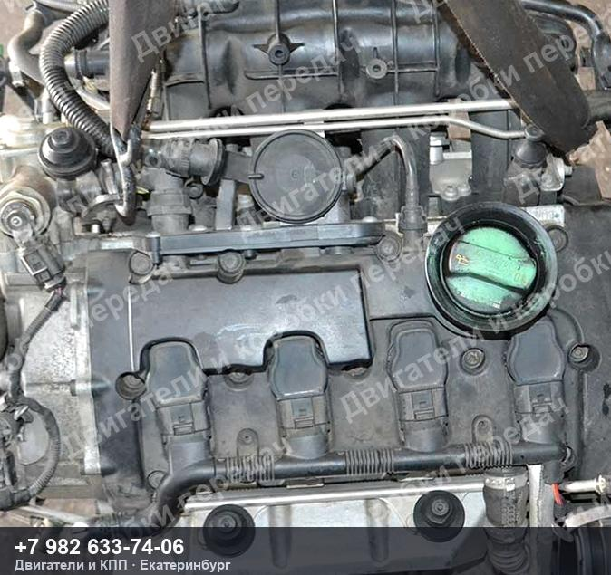
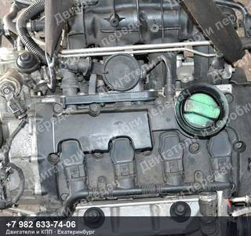
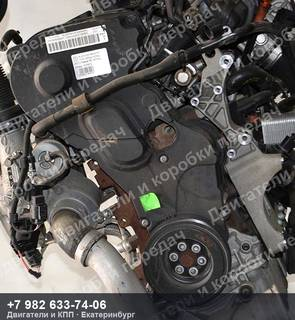
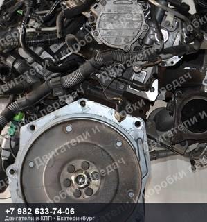
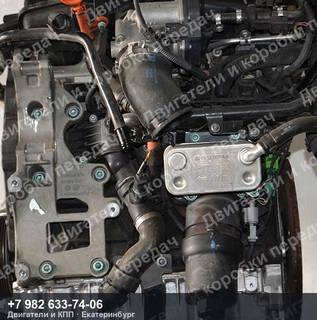
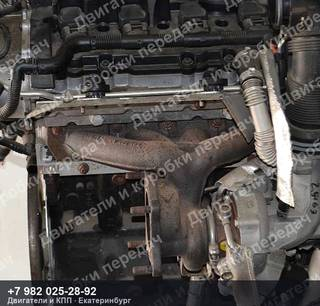
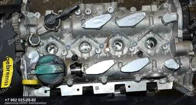
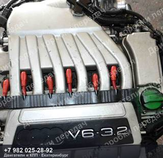
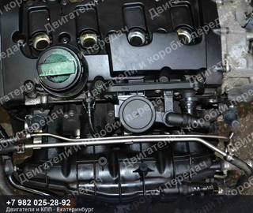

Контрактный двигатель Audi/Volkswagen A3/S3/TT/OCTAVIA/EOS/GOLF/PASSAT
Контрактный двигатель Audi/Volkswagen A3/S3/TT/OCTAVIA/EOS/GOLF/PASSAT — 2.0 л, 200 л.с., BWA, пробег 87 000 км.
| Марка | AUDI/VOLKSWAGEN |
| Модель | A3/S3/TT/OCTAVIA/EOS/GOLF/PASSAT |
| Двигатель | BWA |
| Пробег | 87 000 км |
| Номер детали | 87000km |
| OEM-номера | 06F100033G, 06F100033GV, 06F100033GX, 06F100098, 06F100098X, 06F100098V |
| Состояние | Б/у |
| Артикул | ДК-574335 |
Контрактный двигатель Audi/Volkswagen A3/S3/TT/OCTAVIA/EOS/GOLF/PASSAT — что важно знать
Агрегат снят с автомобиля AUDI/VOLKSWAGEN A3/S3/TT/OCTAVIA/EOS/GOLF/PASSAT пробег 87 000 км. Двигатель BWA. Номер детали 87000km. Подходящие OEM-номера: 06F100033G, 06F100033GV, 06F100033GX, 06F100098, 06F100098X, 06F100098V.
Перед отправкой агрегат проверяем и фотографируем. Пришлём фотографии и видео работы именно этого экземпляра, поможем проверить совместимость по VIN вашего автомобиля. Отправка из Екатеринбурге до транспортной компании — бесплатно, дальше — любой ТК до вашего города.
Не нашли свой контрактный двигатель Audi/Volkswagen A3/S3/TT/OCTAVIA/EOS/GOLF/PASSAT?
Пришлите VIN или марку с моделью — проверим по складу и подберём то, что точно встанет на вашу машину. Ответим и подскажем, даже если у нас этого нет.
Похожие агрегаты Audi/Volkswagen


